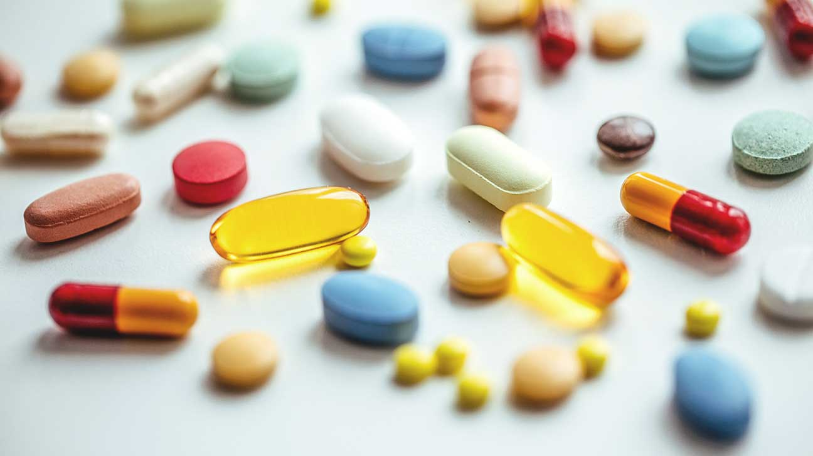

Life Long Learner.
The opioid epidemic is such a huge problem in America today. There is no single solution that will be able completely solve the crisis.
Below are some solutions that may help reduce the impact of the opioid crisis, and put us one step closer to ending the epidemic.
HBFL.

Solution 1:
Increase access to effective addiction treatment and therapy.
It's so much easier to get high on opioids than to seek treatment. According to the American Addiction Centers, in 2017, about 20.7 million people over the age of 12 were in need of substance abuse treatment,
but only about 19% of these people get treatment. It may be that these drug abusers don't have insurance and are unable to cover the costs,
treatment centers may not be available to some people, or the abusers have convinced themselves that they can quit whenever. Regardless, treatment needs to be accessible to everyone needing help.
When dealing with tobacco, New York City solved the smoking problem not by just banning the use of tobacco, but also providing free nicotine patches or free nicotine gum. This made getting simple treatment way
easier. Similarly, we can provide addicts with alternatives such as medicine-assisted treatment to reduce urges to use opioids.
Greetings, Human.
Solution 2:
Stop our "tough on crime" approach to solving the opioid crisis.
The war on drugs isn't working. The United States now has the highest incarceration rate in the world due to ineffective harsh drug laws.
These laws and policies were supposed to cut down the supply of drugs in America, which would drive up the prices of drugs and make them
much less accessible. This war was started in 1971 by President Nixon, and since 1981, heroin prices have been dropping drastically, despite tougher laws continuing
to be passed in an effort to cut off the supply. Instead of trying to crack down on the supply of opioids, we need to develop better policies,
focusing on reducing the danger of opioids. The strategy of harm reduction may seem counter intuitive, but has proven to be very effective in many
countries, such as Canada, and Switzerland. By providing addicts with clean heroin, medical supervison, and clean needles, along with social workers who can help drug abusers get their lives on the right path, addicts won't be dedicating their lives
to getting their drugs illegally, and can focus on getting a job, and getting their life together. Medical supervision will reduce the likelyhood of an overdose, and clean needles will lessen
HIV transmission by 80% among drug users who inject drugs, according to the Drug Policy Alliance. Eventually, drug addicts will be able to go into recovery and no longer be relying on drugs to live, risking overdose or contracting HIV.
"Do not judge me by my successes, judge me by how many times I fell down and got back up again." - Nelson Mandela
Solution 3:
Use VR to educate people about the danger of drug abuse.
Ending the opioid epidemic by getting addicts the help they need is great, but we also should have prevention measures to keep future generations from perpetuating the epidemic. Educating teens in school
about the effects of opioids and other drugs through videos, articles and worksheets is somewhat effective. However, using virtual reality may be even better. Teens may not be engaged in the videos or articles
teachers show them, and may not understand the true dangers of drug abuse, but VR can create an immersive, engaging environment for teens to learn. We can use VR to train teens in actual simulations of high-stake situations
they may encounter in the future, (e.g. being offered drugs at a party), so that students can be prepared for the real world.